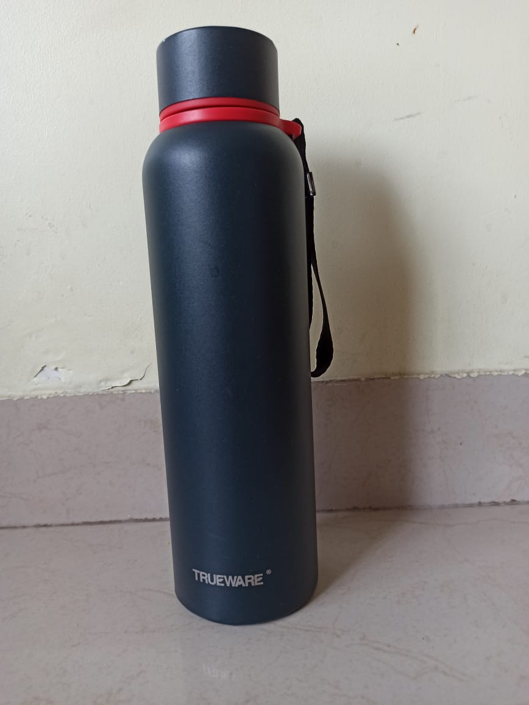
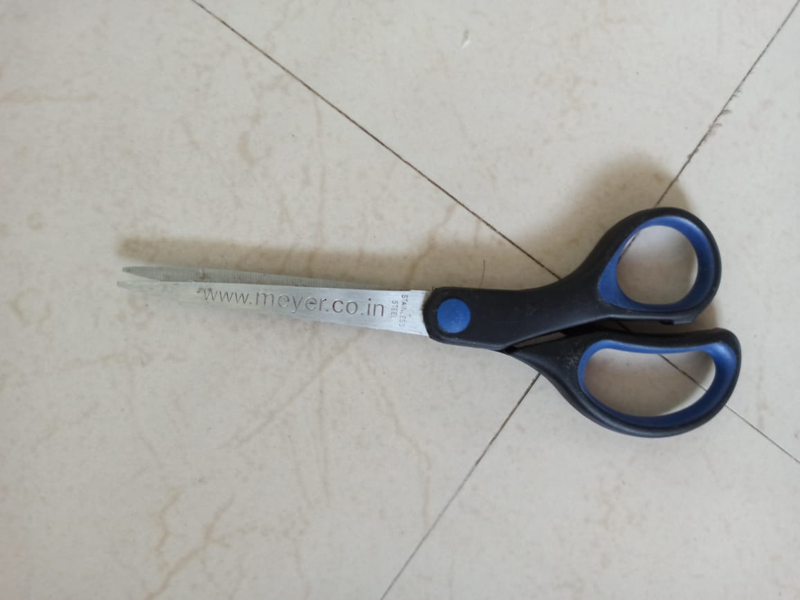
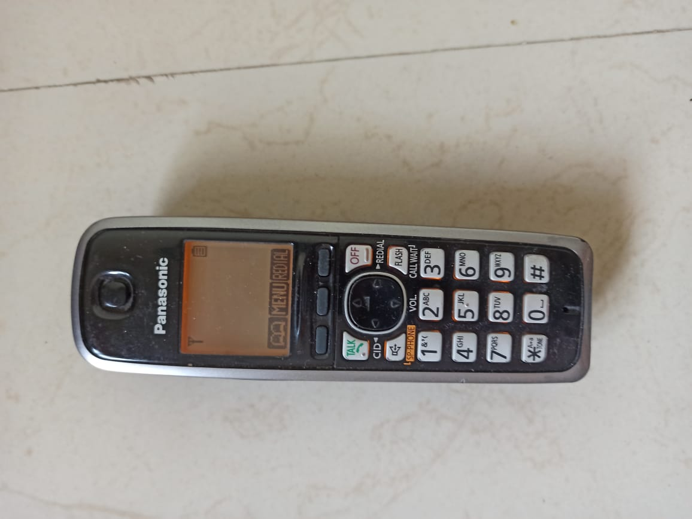
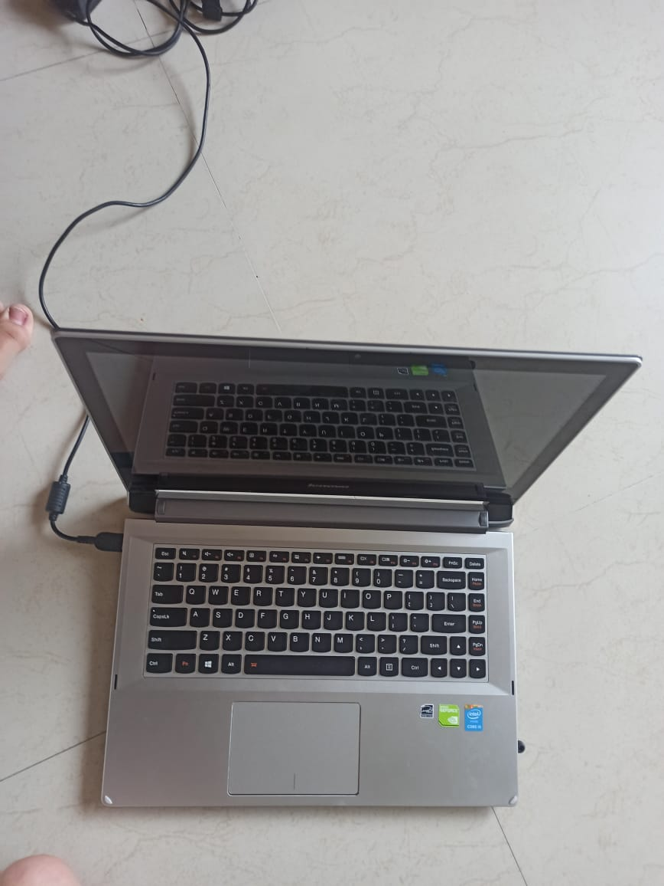

Case Study
Test Image -

Output on MobileNet -
Water Bottle
Output on Microsoft Azure -
Speaker
MobileNet is more accurate
Test Image -

Output on MobileNet -
Opener
Output on Microsoft Azure -
Scissors
Microsoft Azure is more accurate
Test Image -

Output on MobileNet -
cellular phone
Output on Microsoft Azure -
remote
MobileNet is more accurate
Test Image -

Output on MobileNet -
laptop
Output on Microsoft Azure -
keyboard
MobileNet is more accurate
The Final Result :-
MobileNet is more accurate than Microsoft Azure
Developed By- Mrityunjay Gupta